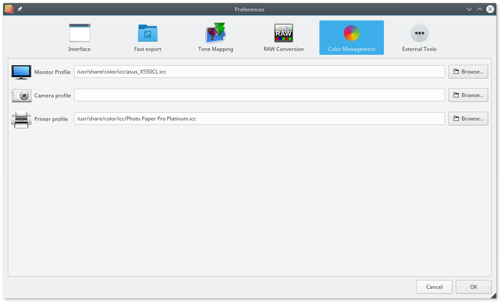

Monitor Profile
Select a color profile associated with your monitor from file. You can find the icc profile in the CD supplied with the monitor or you can download it from the vendor website.
Camera Profile
Select a color profile for your camera make and model. Chose None if your camera does not have a profile (sRGB is used as default), Built in to use the profile embedded in your image files, Custom to select a color profile from file.
Printer Profile
Select a color profile for your printer from file. As for the monitor you should be able to find the icc profile in the CD provided or you can download it from the vendor website.
